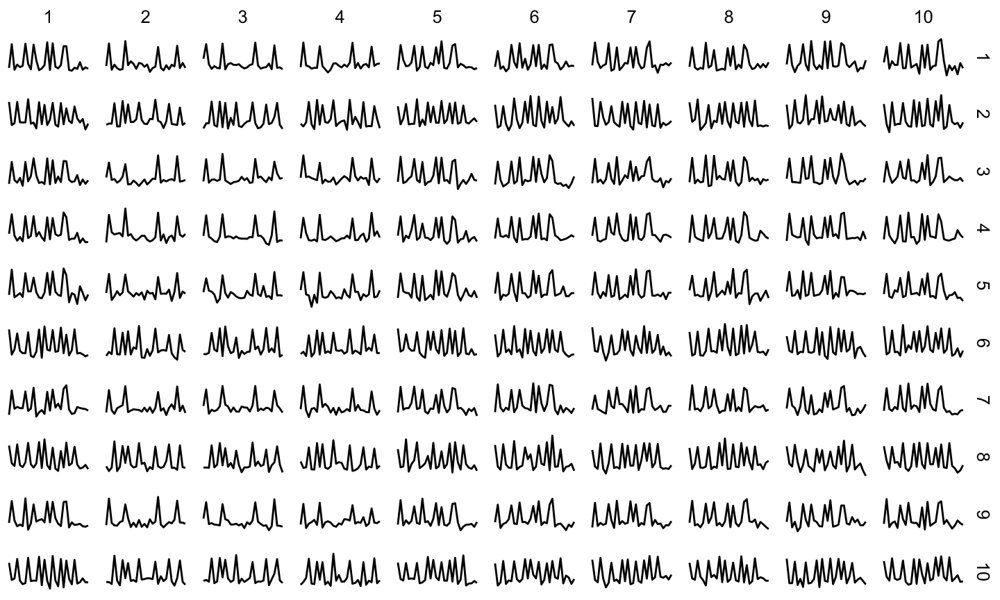
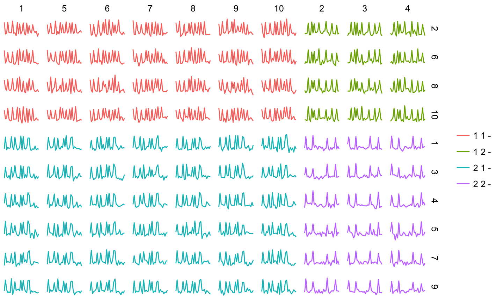
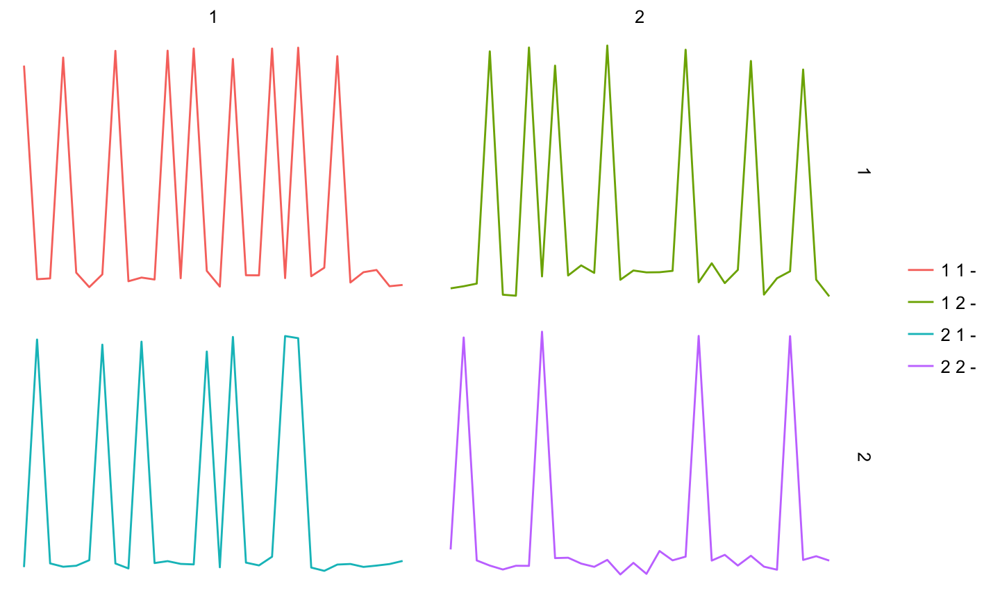
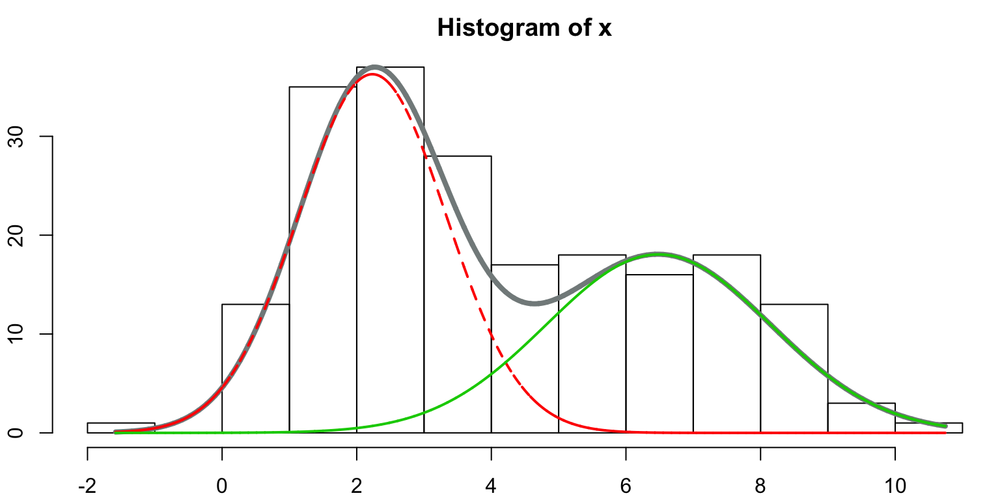

- Contexte
- Classification ?
- Introduction
- Modèle de mélange simple
- Algorithmes classiques
- Dans notre cas ?
- Latent Block Model
- Algorithme SEM-Gibbs
- Choix du modèle
- Application sur des données EDF
CNAM - Décembre 2016
Données : séries temporelles, pour plusieurs individus et plusieurs unités temporelles (jours, semaine, mois, …), avec plusieurs mesures par unités.

Trouver une partition optimale en lignes (sur les individus) et en colonnes (sur les unités de temps)

Décrire la partition obtenue en terme de courbe moyenne pour mieux comprendre les différences entre les classes

Notation : Soit \(x\) une matrice de données \(n \times d\) définie par \(x = {x^j_i ; i \in I; j \in J}\), où \(I\) est un ensemble de \(n\) objets (lignes, observations, instances, individus) et \(J\) est un ensemble de \(d\) variables (colonnes, attributs).
Définition : Une partition de \(I\) en \(s\) classes (\(s\) est supposé connu) est un ensemble de parties non vides \(z_1,\dots,z_s\) vérifiant :
\(\cup^s_{k = 1} z_k = I\)
Partition optimale localement
On se place ici dans le cadre de partitions dites non-recouvrantes : un individu appartient à une et une seule classe

Il est possible d'utiliser un modèle de mélange dans le cadre de la classification simultanée des lignes et des colonnes
Problème : on laisse de côté des détails potentiellement intéressants
Classification simple des \(n\) * \(d\) séries
Problème : rien n'assure que les classes soient cohérentes en terme d'individus ou d'unités de temps
Utiliser la classification croisée (ou co-clustering) pour rechercher les deux partitions en même temps
Notons \(\mathbf{X}\) l'ensemble à partitionner
\[ \mathbf{X} = \{x_{ij}(t)\}_{t \in [0, T]} \text{ avec } i=1,\ldots,n \text{ et } j=1,\ldots,p \] Chaque courbe \(x_{ij}(t)\) peut être exprimée comme une combinaison linéaire de fonctions de bases \(\{\phi\}_h\) (avec \(h=1,\ldots,m\))
\[ x_{ij}(t) = \sum_{h=1}^m a_{ijh} \phi_h(t) \]
On a ainsi \(\mathbf{a}_{ij} = (a_{ijh})\) les coefficients de \(x_{ij}\). Nous nous baserons sur cette représentation dans la suite du travail.
Dans le cadre des données fonctionnelles, le modèle peut s'écrire ainsi :
\[ \text{p}(\mathbf{\alpha};\theta) = \sum_{z \in Z} \sum_{w \in W} \text{p}(\mathbf{z};\theta) \text{p}(\mathbf{w};\theta)\text{p}(\mathbf{a}|\mathbf{z},\mathbf{w};\theta) \]
A partir de paramètres initiaux et d'une partition en colonnes initiale, il faut répéter les étapes suivantes un nombre d'itérations prédéfinis.
Les partitions finales sont obtenues avec la méthode du MAP (maximum a posteriori - on affecte l'objet à la classe à laquelle il a le plus de chance d'appartenir).
ICL-BIC
\[ \text{ICL-BIC}(K, L) = \log \text{p}(\mathbf{x}, \hat{\mathbf{v}},\hat{\mathbf{w}}; \hat{\theta}) - \frac{K - 1}{2} \log n - \frac{L - 1}{2} \log p - \frac{K L \nu}{2} \log (np) \]
Avec \(\nu = md + d + 1\) nombre de paramètres continues par bloc et
\[ \log \text{p}(\mathbf{x}, \hat{\mathbf{v}},\hat{\mathbf{w}}; \hat{\theta}) = \prod_{ik} \hat{z}_{ik} \log \alpha_k + \prod_{j\ell} \hat{w}_{j\ell} \log \beta_\ell + \sum_{ijk\ell} \hat{z}_{ik} \hat{w}_{j\ell} \log \text{p}(\mathbf{a}_{ij} ; \hat{\theta}_{k\ell}) \]
The value of K, L leading to the highest ICL-BIC have to be selected
Govaert, and Nadif. 2013. Co-Clustering.
Govaert, Keribin, and Celeux. 2010. “Estimation d’un Modèle à Blocs Latents Par L'algorithme SEM.” 42èmes Journées de Statistique.